SUNDER is a competitive 1v1 TPS shooter where two players face each other in a hostile desert arena on a distant exoplanet.
The game encourage players to constantly adapt their positioning, movement, and aim during intense duels.
Exploration plays a key role, as the arena hides limited resources that can provide a temporary advantage and push players to take risks.
Each match is designed as a tense hunt, where reading the opponent and controlling the environment are just as important as raw mechanical skill.
The game was developed as a student project with the ambition to explore competitive multiplayer gameplay in a controlled 1v1 environment.
From the start, the project aimed to rely on a dedicated server architecture in order to better understand the constraints and challenges of online competitive games.
This technical choice strongly influenced both production and design decisions, shaping the way the team approached development, testing, and iteration throughout the project.
I worked on SUNDER as both Project Lead and Lead Programmer within a team of 10 students.
I was responsible for coordinating the project's direction while also taking ownership of its technical foundation.
This included planning, decision-making, and ensuring that the team could effectively work on a multiplayer Unreal Engine project.
At the beginning of the project, my involvement was very broad.
I initiated SUNDER from an early prototype and helped define its core vision.
During this phase, I actively prepared and participated in most major meetings, including game design, technical design, and artistic direction, contributing to both creative and technical decisions.
As production progressed and deadlines became tighter, my role naturally evolved.
Progressively shifted my focus toward programming and technical problem-solving, prioritizing stability, infrastructure, and production efficiency to support the rest of the team.
Dedicated Server Structure

Multiplayer & Architecture

Version Control & Pipeline
Tech Art & Support
Multiplayer & Production
...
...
...
...
Tech Art & Tools
...
...
...
...
Learnings
...
...
...
...
Medias
...
...
...
...
Play
...
...
...
...